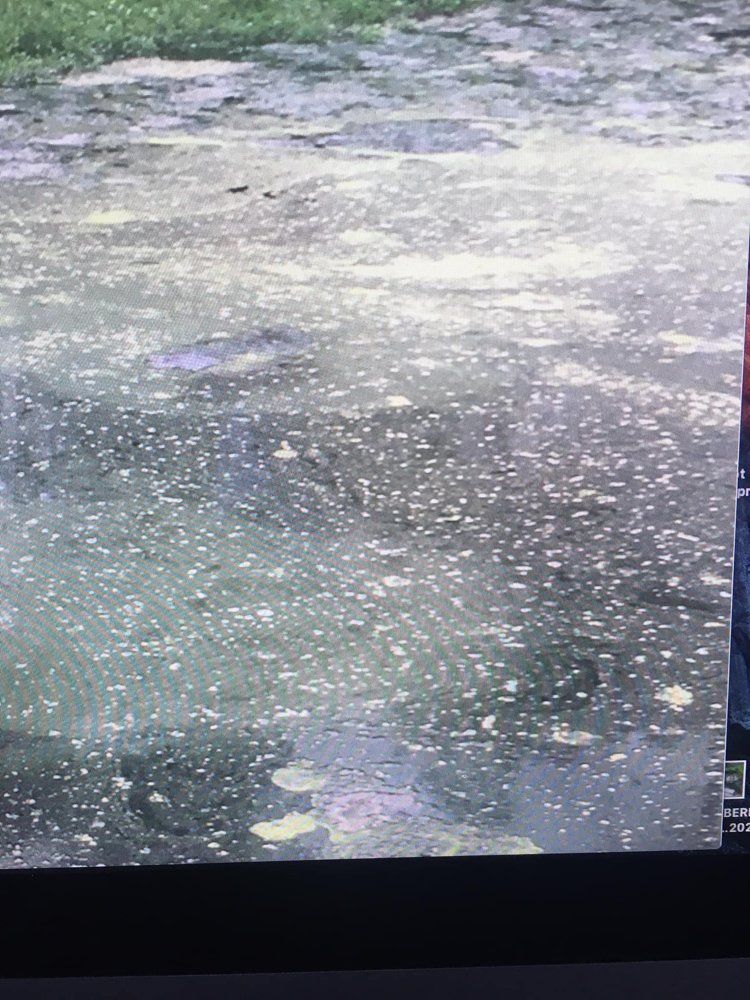
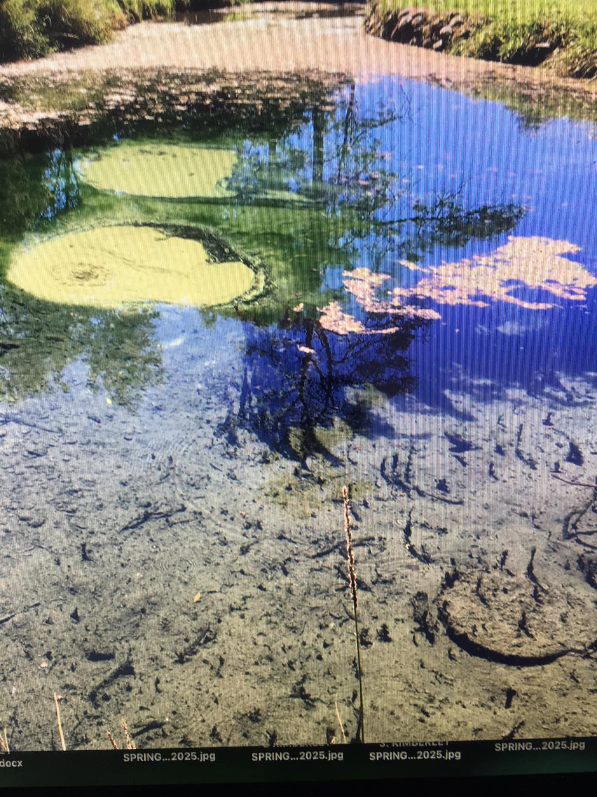

The Situation
Kimberley Warm Springs has been a natural wonder for generations, with warm, clear water bubbling 24/7 from beneath the earth.
Photo 1 (below) was taken in 2023, shortly after a cleanup effort removed a layer of algae that had previously smothered the beautiful, churning sand.
Due to a rare snail living on the algae, Parks and Reserves stopped maintaining the 27°C temperature year-round, leading to a neglected state.
Photo 2 (below), taken recently, shows the spring overrun with algae and barely recognizable.
Our Message
Would you travel to see this cesspool, just for a snail 🐌? Or would you rather see Mother Nature in her full glory?
Tell Parks and Reserves this isn’t what’s advertised online, and it’s a disgrace to let this unique site decline.
Leave a Comment